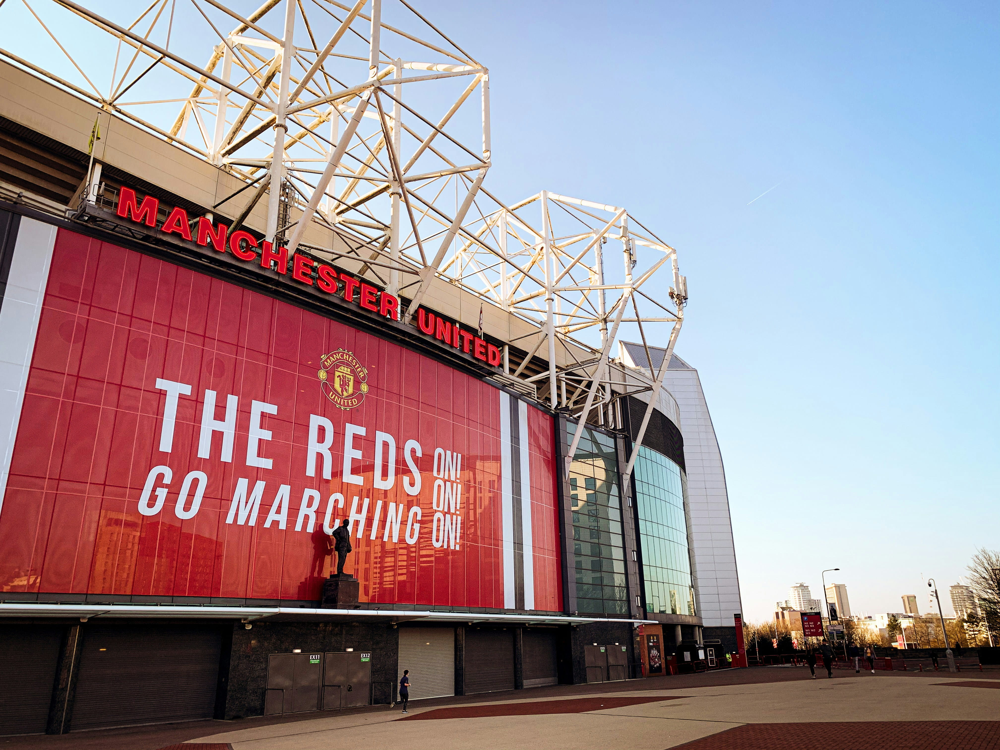

About us
An independent home for match tickets
What is this site?
Turnstile is a concept for an independent, multi-club ticket platform covering the 2026/27 Premier League. It was designed and built by Sameer Roy as part of the UFCFES-30-1 Web Development module at UWE Bristol, and doubles as a frontend portfolio piece.

What problem does it explore?
Fans often find fixtures and prices spread across several pages, with extra fees appearing late. This concept explores a short path from fixture list to price, with the booking fee always shown separately and up front.
What we believe
- Clarity first. Prices and fees are always visible.
- Calm design. Quiet layouts, readable type, nothing that shouts.
- Respect for clubs. We show club names plainly and never imitate crests.
What is not included
Seat selection, basket and checkout are not part of this project yet, so those controls are shown as “soon”.